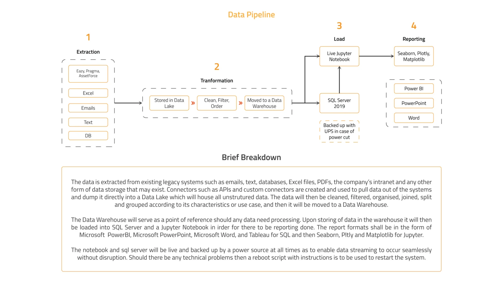

Automation
Sales Process Optimisation
A Python pipeline links sales quotes to completed services, helping the team track revenue and identify upselling opportunities.

Context
The sales department lacked a standardized process and had limited visibility into quotes, sales performance, and field service outcomes, making it difficult to generate actionable insights.
Objective
I was tasked with designing an end-to-end sales process, creating a structured data pipeline for quotes, and enabling automated reporting to support decision-making.
My contribution
I designed the full sales process in Adobe Illustrator and gained board approval for its SOP inclusion, built an ETL pipeline where quotes were logged in Excel Online, transformed via Python, stored in OneDrive, and consumed by Power BI, while automating a quote log and linking it to a job tracker to connect completed services to upselling opportunities.
Outcome
The system provided monthly sales reports with clear insights, centralized sales and operational data, linked quotes to service outcomes and upsells, and established a documented, scalable sales process that improved visibility and revenue tracking.